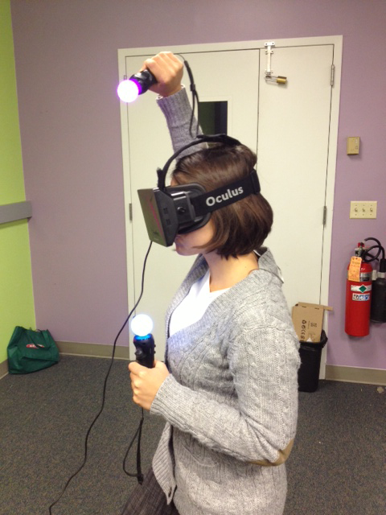

<div class="section">
	<div class="row" id = "mainBody">
		<!--<h3>About Me</h3> -->
		<div class="col s12 ">
        	<div class="col l4 s8">
              	
            </div>
            <div class="col l8 s12">
	            <span class="black-text">
	               A creative developer passionate about developing innovative ways of entertainment with the use of new technology to promote learning. I believe interactive storytelling and reactive installations can provide a huge impact on people worldwide by showing them that magic is still among us.
	               <br/><br/>
	                I am a graduate student from Carnegie Mellon University's Entertainment Technology Center (ETC). At the ETC I specialized on game design techniques to successfully impact people by maintaining them interested and involved when exposed to new technologies. When using sensors or mix reality devices (Kinects, VR, you name it!!) you need to not only master the algorithms behind them; but also understand the users needs. Having a user first approach is crucial to bridge the gap between technology and learning.To promote learning with new technologies is what keeps me going. Knowing that my work is helping someone remember we live in a magical world where everything is possible is what makes me develop these types of experiences. This is why I want to be part of industries that have similar views and interests as me!
	            </span>
            </div>
        </div>
   		
   		<div class="col s12 ">
	
        	<div class="about_quote">
      			<p>"I like nonsense, it wakes up the brain cells. Fantasy is a necessary ingredient in living."</p>
 				<i>-Dr. Seuss</i>
    		</div>
			<hr>
			<div class="about_more">
				<br/>
				<div class="col l6 s12 ">
					<b>PASSIONS</b>
					<ul class="about_list">
					  <li>Virtual Reality, Augmented Reality</li>
				      <li>Computer Graphics and Computer Vision</li>
				      <li>Fairytale and science fiction</li>
				      <li>Game Design / Game play</li>
				      <li>Hacking, Coding </li>
				      <li>Mobile and Web Technologies</li>
				      <li>Designing, Prototyping, Research</li>
				      <li>HCI, Hardware, Robotics</li>
				      <li>Data Manipulation / Visualization</li>
				      <li>3D Animations</li>
				    </ul>
				</div>
				<div class="col l6 s12 ">
					<b>GOALS</b>
					<ul class="about_list">
				      <li>Start a company that embodies my passion of using new technology to solve humans problems for a better future.</li>
				      <li>Create mix realities that bring dreams and fairytale to life.</li>
				      <li>Create immerse live video experiences in mix reality </li>
				      <li>Help and inspire woman in developing countries in the technical field.</li>
				      <li>Create new ways of interacting with new and old media.</li>
				      <li>Create and design real-time computer graphics that pushed visual boundaries.  </li>
				    </ul>
				</div>

			</div>	
			<hr>
			 
			<div class="about_more">
				<br/>
				<i class="material-icons">whatshot</i> <b>Background </b>
				<p>In 2008 I left Colombia to start my path in computer science and electronic media to develop the right tools to express myself. Finishing my college career as a dual-degree at Rensselaer Polytechnic Institute (Troy, NY) in computer science and electronic media has made me not only a strong programmer but a great dreamer. During my college carrier I experimented with different techniques, while searching for my own. Early on I fell in love with the power of computer graphics. From basic problems, like ray tracing, to extremely complex data structures and algorithms, like participating media and fluid simulations; everything fascinated me. Computer graphics improved my technical and problem solving skills with every line of code I wrote. This field is a never-ending challenge, in which the harder the problem the more beautiful the reward. It is in this field that makes my inner artist come to life!
			    <br/><br/>
			    Once enlightened by the power of computer graphics I started experimenting with OpenFrameworks, OpenGL and gaming. I knew a new path had began, a path full of complexity and imagination. A path that would take me closer to impacting the world.
			    <br/><br/>
			  	</p>
			  	<b><i class="material-icons">filter_drama</i> Early Life </b>
			    <p>I was born and raised in Colombia, a country with exceptional potential that has struggled for many decades to overcome an internal conflict that has led to overwhelming violence, poverty and insecurity. I was six years old when I was introduced to a computer by my father, as a mean of distraction from the outside world. Treasure MathStorm, my first computer game, was the only thing I knew how to use in a computer; nonetheless the machine always intrigued me, and I would spend hours playing with what I had. Today, I still have countless memories of the game and the thoughts it gave way to.
			    <br/><br/>
			    Since I was 10 years old I began traveling the world with my parents. They wanted my siblings and I to gather experiences that would help us understand the world we live in. Understand the differences between the different cultures that arise in every corner of the word. After two years of traveling I developed the desire to help and impact those in need. My mother, being an artist, advised me to express myself in paintings, and I tried it until my dad brought home a Nintendo 64. My life changed 180 degrees. I was blown away by the power of such machine. Once exposed to this change in technology, I started to feel limited by my brush and my canvas. I wanted to use technology to express myself. I remember asking my father to tell me something new about technology every day. His answers were always dreams in children's books. I was flattered. It wasn't until 8th grade, when introduced to web development, that I realized what his answers really meant. I became fascinated with the idea of programming and started reading about languages like C and JavaScript. Since then, I knew programming was going to be my brush and my mind the canvas.
			    </p>
			 </div>
			    
			</div>

		</div>
		
	</div>
</div>